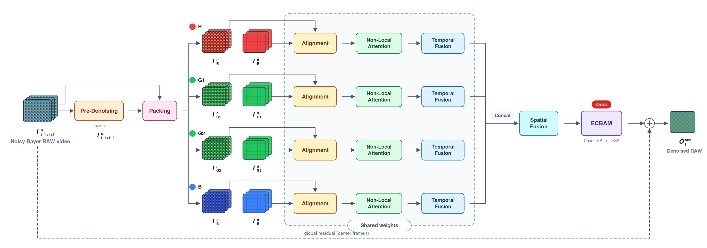

A RAW video denoiser that takes three consecutive noisy Bayer frames and reconstructs the clean RAW of the center frame — with an attention block redesigned for the globally-distributed noise of extreme low light.
The network takes consecutive noisy Bayer RAW frames In[t−1:t+1] and outputs the denoised RAW frame Orawt for the center frame. It is organised into six stages:

A pretrained, then frozen module lightly denoises the input so that motion/alignment offsets are estimated from clean-ish features, not raw noise.
Noisy and pre-denoised frames are split by Bayer pattern into four colour sub-frames (R, G1, G2, B). For the IMX327 sensor used here the pattern is RGGB.
The four channels run a shared-weight path: pyramidal deformable alignment, global spatio-temporal attention, then confidence-weighted temporal fusion of the three frames.
The fused channels are concatenated and passed through a 10-residual-block reconstruction trunk that exploits cross-channel correlation.
Channel attention + Enhanced Spatial Attention, replacing CBAM's 7×7 spatial attention with a downsampled, large-receptive-field mask.
A final 3×3 conv produces a 4-channel RAW residual; the center noisy frame is added back to yield the denoised RAW output.
The noisy RAW frames first pass through a pre-denoising module whose parameters are frozen after pretraining. Its output is not used directly in the final restoration; instead it guides deformable-convolution offset estimation during alignment. In extreme low light, feeding heavy noise straight into offset estimation destabilises frame-to-frame registration, so estimating motion from denoised features makes alignment more reliable.
Packing then splits each noisy and pre-denoised frame into four colour channels following the Bayer layout. Because the IMX327 sensor is RGGB, each frame becomes an R / G1 / G2 / B set of sub-frames fed into per-channel paths.
The four packed channels run in parallel through an identical, weight-shared path of three modules:
A pyramidal deformable-convolution module aligns neighbouring frames (t−1, t+1) to the center frame. Offsets are estimated from the pre-denoised features but applied to the noisy features, over a 3-level (full / ½ / ¼) coarse-to-fine pyramid that compensates both large and fine motion.
Computes global spatio-temporal correlations between aligned frame features, capturing long-range dependencies that local convolutions miss. Regions whose local information is destroyed by noise can be restored by referencing similar patterns at other positions and in other frames.
Temporal and spatial attention weight the three frames by per-frame reliability and merge them into a single feature map — high weight where alignment is accurate, low weight where alignment error is large — suppressing ghosting in moving scenes.
The four fused channels are concatenated and passed through Spatial Fusion, a reconstruction trunk of 10 residual blocks. The attention block applied to its output is the heart of this project.
The original RViDeNet uses CBAM here — channel attention followed by a 7×7-convolution spatial attention. That spatial attention is limited to a 7×7 receptive field. In extreme low light, noise is distributed almost uniformly across the whole frame, and a narrow receptive field cannot reliably tell flat noisy regions apart from the structures that must be preserved.
We keep CBAM's channel attention (average/max pooling + shared MLP) but replace the spatial attention with ESA:
In our experiments, RViDeNet-ECBAM gives consistent PSNR/SSIM gains on every self-captured scene and the best temporal consistency (tOF) among all compared methods — evidence that the wide-receptive-field spatial attention is effective against global low-light noise.
A final 3×3 convolution turns the ECBAM features into a 4-channel RAW residual, and the center noisy frame is added back as a global residual to form the denoised RAW output Orawt. Learning only the noise residual (rather than the whole signal) stabilises training and passes the input's structure straight through to the output, helping fine-detail preservation.
| Aspect | Original RViDeNet | This project (RViDeNet-ECBAM) |
|---|---|---|
| Attention block | CBAM (channel + 7×7 conv spatial) | ECBAM (channel + ESA) |
| Spatial-attention receptive field | Limited to 7×7 kernel | Greatly enlarged (strided conv + max-pool downsampling) |
| Bayer packing | GBRG (CRVD) | GBRG + RGGB (IMX327) |
| Synthetic noise model | Poisson + Gaussian | Poisson + Gaussian + row noise + quantization noise |
| Fine-tuning LR | Single LR | Layer-wise (backbone 1e−6 / recon·ECBAM·output 1e−5) |
| Inference | CRVD evaluation script | Full-resolution tiled inference pipeline |
CRVD and the self-captured low-light RAW set are used for sequential fine-tuning; ReCRVD is held out to test generalization under conditions different from training.
| Dataset | Composition | GT generation | Role |
|---|---|---|---|
| CRVD | 11 indoor scenes × 5 ISO (1600–25600), 55 scenes × 7 frames | Average of repeated noisy RAW per position (ISO 25600: 500-shot avg + BM3D) | Fine-tuning (stage 3-1) |
| Self-captured low-light RAW | 0.1 lux, 12 scenes × 60 frames, IMX327 RAW | ~100-shot average per frame position, no extra post-processing | Fine-tuning + validation (stage 3-2) |
| ReCRVD | 4K-screen re-capture, 120 scenes | High-ISO noisy ×10 + ISO 100 long-exposure clean ×1 | External generalization test |
The self-captured 0.1 lux RAW set is the lab's private, non-public dataset; it is not released.
Training all of the network from scratch on real low-light RAW alone is unstable, so the model first learns basic restoration on synthetic data and is then gradually adapted to real sensor noise. Every stage uses the ECBAM-equipped model.
The pre-denoising module is pretrained on synthetic noisy–clean pairs (230 clean SID RAW images + Poisson–Gaussian noise) and then frozen. It exists only to give deformable alignment a stable, denoised guide for offset estimation.
Real noisy–clean RAW video of diverse moving objects is hard to capture, so synthetic RAW video is built from four MOTChallenge sRGB clips via image unprocessing, then corrupted with the RAW noise model. The base model is shot noise as Poisson, read noise as Gaussian:
We extend it with row noise and ADC quantization noise observed in real CMOS sensors, narrowing the gap to real sensor-noise distributions. The loss is RAW reconstruction only:
Learning rate starts at 1e−4, drops to 1e−5 after 20 epochs, converging at epoch 33.
Starting from the pretrained model, we fine-tune on CRVD first, then the self-captured 0.1 lux set, on 256×256 patches. The loss adds a temporal consistency term (no sRGB loss):
Here Ôraw1 and Ôraw2 are two outputs for the same frame from different noisy-sample combinations; forcing them to agree suppresses frame-to-frame flickering. We set λ = 1, γ = 0.1.